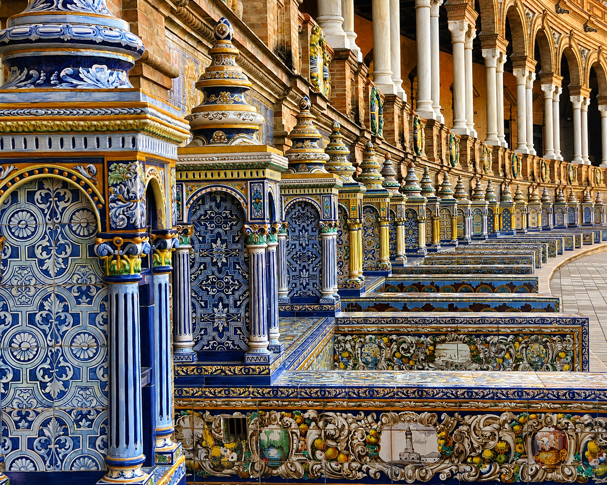

Plaza de España is a historic square in Seville, built for the 1929 world fair, and free to visit for everyone. I've lived in Seville for over 30 years and seen every monument hundreds of times. And yet — if anyone asks me what's the most beautiful of all, my answer is always the same: Plaza de España.
The most photographed spot in Seville — and it's free
The first and most important thing to say about Plaza de España is that it's open to everyone, all day, completely free. No ticket, no queue, no closing time. The monument itself is shaped like a great half-moon — an open, embracing crescent turning towards the world with open arms. The two towers at each end frame the whole thing, and along the inner curve runs a canal where you can rent a rowing boat.
Along the canal's edge you'll find 48 ceramic benches — one for every Spanish province as they were defined in 1929. Each bench is decorated with historic scenes from its province, painted in colourful azulejos with a craftsmanship precision that takes your breath away when you stop and look closely.
Plaza de España opens naturally onto Parque de María Luisa — one of Seville's most beautiful parks, also laid out for Expo 1929. One thing to note: Plaza de España is free to visit during the day, but closes in the evening — so the spectacular golden hour should be planned while it's still light out.
Golden hour — when Plaza de España glows like pure gold
I've seen Plaza de España in every kind of light and every kind of weather. But nothing compares to what happens in the golden hour — the hour after sunset when the light comes in from the west and hits the beige brick at exactly the angle that changes everything.
The building glows as though made of gold. The fountain in the middle reflects the shimmering light. The whole square shifts colour from warm ochre to deep orange to soft pink, minute by minute, until the sun disappears below the horizon. It's the most beautiful thing I know.
Expo 1929 — the fair that changed Seville forever
Plaza de España was built for the Ibero-American Exposition of 1929 — and it wasn't just one building that came out of that fair. Over 114 emblematic buildings were erected in Seville for Expo 1929. It's these buildings that give Seville much of its character today.
To me, Plaza de España is the monument that most clearly reflects Seville's more recent history. A city with confidence, with style, with a will to impress. And it succeeded. Plaza de España still impresses — just as much now as almost a hundred years ago.
«Plaza de España is the place in Seville that best captures the city's character — open, proud and generous. It costs nothing to walk in. And yet it's unforgettable.»


- Built for the Ibero-American Exposition of 1929
- The most photographed monument in Seville
- Free and open to everyone during the day — closes in the evening
- 48 ceramic benches — one for each Spanish province in 1929
- Crescent shape with a canal and rowing boats along the façade
- Directly connected to Parque de María Luisa
- Best time to visit: golden hour just before sunset
Frequently asked questions
It was built for the Ibero-American Exposition of 1929.
There are 48 ceramic benches, one for each Spanish province, each decorated with historic scenes from that province.
In the golden hour just before sunset, while it's still light out.